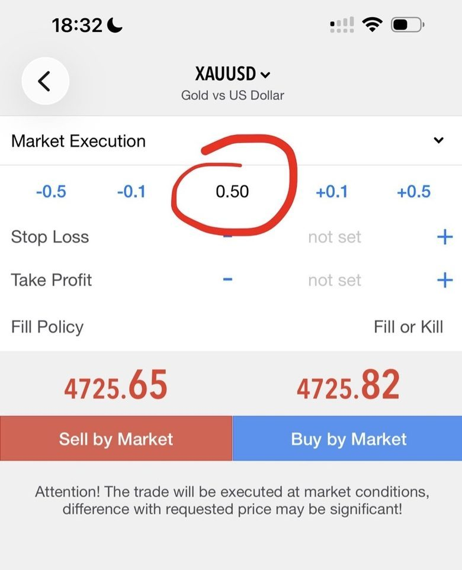
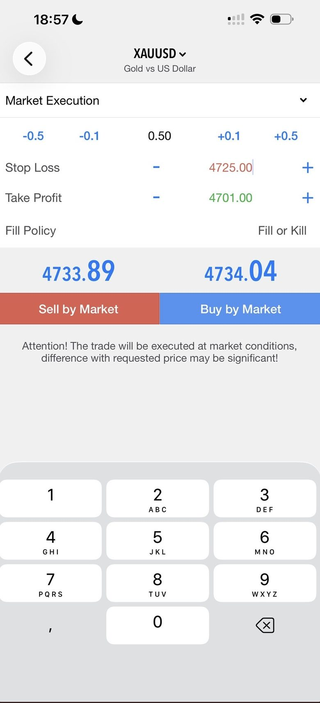

Вхід
4170 до 4172
Більшість зливає не тому, що сигнал поганий. А тому, що зайшли не за тим числом, не тим лотом і без стопа. Тут розібрано, як заходити так, щоб результат залежав від сигналу, а не від того, як ти його прочитав.
У кожному сигналі п'ять речей. Більше нічого вигадувати не треба.
MetaTrader 5, чотири дії. Нічого не змінюємо від себе.
Котирування, далі XAUUSD, далі Trade.
Обсяг рахуємо під свій депозит. Як саме, у блоці 04.
Один в один із сигналу. Не округлюємо і не рухаємо на своє око.
Або Sell by Market, якщо сигнал на продаж.



Цифри на скрінах з іншої угоди. Вони тут тільки щоб показати, де що стоїть. Свої бери тільки з сигналу.
Угода закривається сама по TP або по SL. Вручну закриваємо, коли треба вийти раніше.
Trade, потім Close position. Угода закривається повністю за поточною ціною.
Тут міняємо SL і TP уже у відкритій угоді. Це ж вікно потрібне для беззбитку.


Це головне місце, де люди зливають. Не сигнал, а обсяг.
| Депозит | Максимальний лот |
|---|---|
| до $300 | 0.01 |
| $300 до $400 | 0.02 |
| $400 до $600 | 0.03 |
| $600 до $800 | 0.04 до 0.05 |
| $900 до $1000 | 0.06 |
| $10 000 | 0.1 |
| $15 000 | 0.15 |
| $20 000 | 0.3 |
| $30 000 | 0.7 |
Це стеля, а не рекомендація. Лот рахується під конкретний стоп, а не під депозит взагалі.
Contract size для золота 100, для валютних пар 100 000.

07Рахуємо лот під конкретний стоп і виставляємо ордер. 1:39
Коли ціна пішла в твій бік і взяла перший тейк, стоп переноситься на ціну входу. Після цього угода вже не може закритись у мінус.
Відкриваєш угоду і йдеш у зміну параметрів.
Зайшов на 4732, стоп стояв на 4730. Ціна пішла вгору, перший тейк узятий. Переставляєш SL на 4732 і тиснеш Modify. Тепер гірше нуля не буде.


Ризик рахується від депозиту на одну угоду. Не від настрою і не від того, наскільки впевнений у сигналі.
Стоп ставиться завжди. Без винятків і без "цього разу точно піде".
Ціна вже пройшла більше двох, трьох доларів від точки входу? Сигнал пропускаємо. Наступний буде.
Пропущений сигнал це не втрата. Втрата це коли стрибаєш у вагон на ходу і виходиш у мінус.
Сигнали лежать у закритому каналі. Якщо щось не зійшлося або не виходить виставити угоду, пиши менеджеру, розберемо.
Написати менеджеру @managvalik